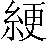
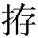

手紙二つとも捭見、質問は别紙同封送ります。
支那にも孔子の道て以て國を治めたいと云って居ます。これから周朝になるでしょう。そうして私は皇室になります。夢にも考へなかった幸です。
惠曇村と罽穞屋とがそんなに遠いですか？宓に桃花源の感を起します。上海では五步にして一つ咖啡店、十步にして一つ罽穞屋、宓に憎む可き処です。
海嬰は朘戢でいけない。家庭革命のおそれ有り、木宓君の方がおとなしいでしょう。 草々頓首
增田兄几下
隋洛文 十月七日
（1）114頁 『元無有』
桑

、はっきり云へない。桑の皮で拵らへた
と訳する外、仕方ない。（2）113頁 以賢良方正對策第一
地方の長官に賢良方正な人と認められ京都に送り、試驄する時に策問を答へて第一人者として及第す。（賢良方正に搿げられても落第する事あり。）
（3）115頁 分仙術感應二門
仙術と感庥との二類に分す。
（4）116頁 清『四庫提要』子部小説類
清『四庫全書提要』の中の子部小説類なり。其の『提要』は中に經、史、子、集の四部（所謂「四庫」）に分け、每部の中に又各類あり。
（5）117頁 邵公
周武王の時の人、周公の弟なり。
（6）a.季札
春秋の時、吴國の太子、道德の高を以って囷せらる。
b.三官書
道士の出鱈目ですから明確に云へない。三官より発せられたる書（命令）でしょう。
c.九宫も天界の宫殿の名、其の中に小い宫殿が九あるよーだ。
（7）118頁
a.五印=唐の時に印度が五部にわかって居ると云ふのだから五印と云ふ。
「嘗至中天寺……輙膜拜焉」まで金剛三昧の話。
b.寺中多畫……は、麻屩及び匙、筯。玄踄の像ではない。
c.蓋西域所無者は麻屩及匙筋。
d.齋日は印度坊様の稖日。（寺には每月、何日かの稖日があるでしょう、其日にあらゆる坊様に食はせる。しかしいつかは知りません。）
[译文]
两函均奉悉，所询问题，另纸附上。
在中国，也有人说要以孔子之道治国，从此就要变成周朝了罢，而我也忝列皇室了，真是做梦也未想到的幸运！
惠曇村[85]离照相馆那么远吗？真令人有世外桃源之感。在上海，五步一咖啡馆，十步一照相馆，真是讨厌的地方。
海婴淘气得厉害，怕会闹家庭革命。木实君想是比较温顺罢。 草草顿首
隋洛文 十月七日
增田兄几下
（1）114页 《元无有》
桑绠，不能确说。除译作用桑皮制的绳子外，没有他法。
（2）113页 以贤良方正对策第一
被地方长官认为“贤良方正”的人，送到京都，在考试时答策问，作为第一名及第。（被举为贤良方正者也有落第的。）
（3）115页 分仙术感应二门
分为仙术与感应两类。
（4）116页 清《四库提要》子部小说类
即清《四库全书提要》中的子部小说类。那《提要》里面分经、史、子、集四部（所谓“四库”），每部之中又有分类。
（5）117页 邵公
周武王时的人，周公的弟弟。
（6）a.季札
春秋时吴国的太子，以道德高尚著称。
b.三官书
系道士信口开河，故不能确说。许是三官所发的书（命令）罢。
c.九宫也是天界宫殿名，其中似有九座小宫殿。
（7）118页
a.五印=据说唐时印度分为五部分，故称五印。
“尝至中天寺……辄膜拜焉”是金刚三昧的话。
b.寺中多画……，麻屩及匙、箸。不是玄奘的像。
c.盖西域所无者，麻屩及匙、箸。
d.斋日，即印度和尚的斋日（在寺内每月定某日为斋日，那天给所有和尚供食。但何日就不知道了。）[86]
注 释
[85] 惠曇村 在日本岛根县八束郡，增田涉的故乡。
[86] 以上回答增田涉对《中国小说史略》第十篇《唐之传奇文及杂俎》中若干词语的提问。其中所标页码为1931年上海北新书局出版的修订本页码。